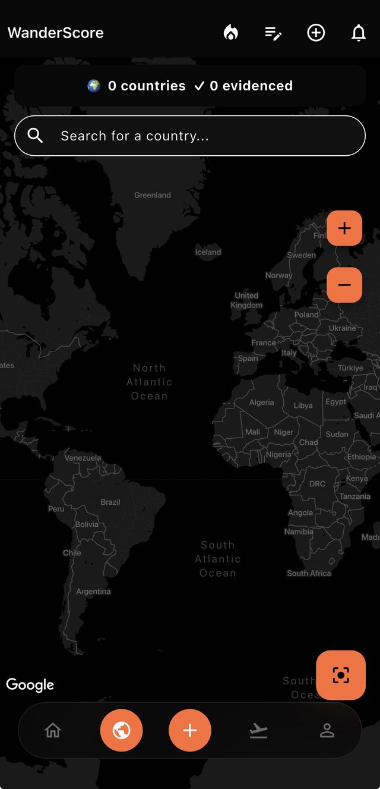
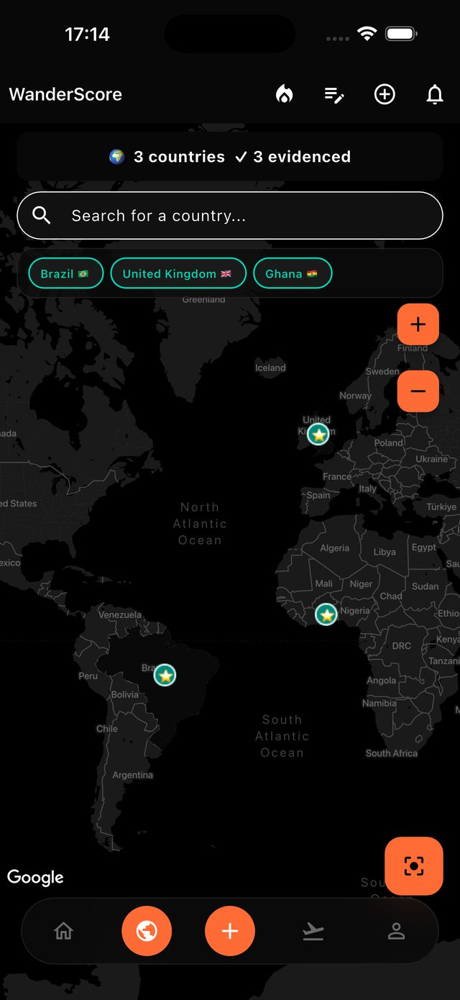
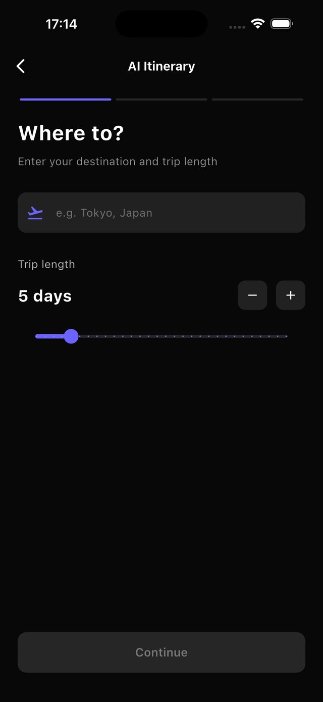
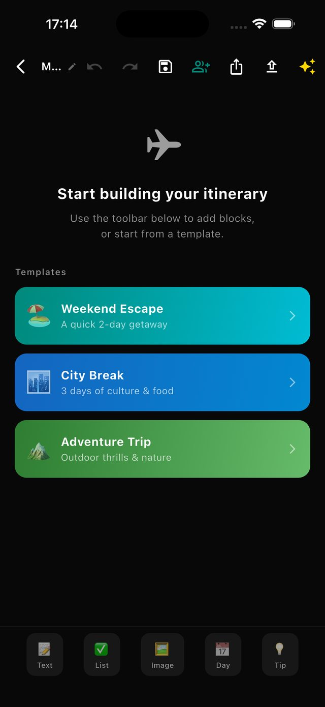
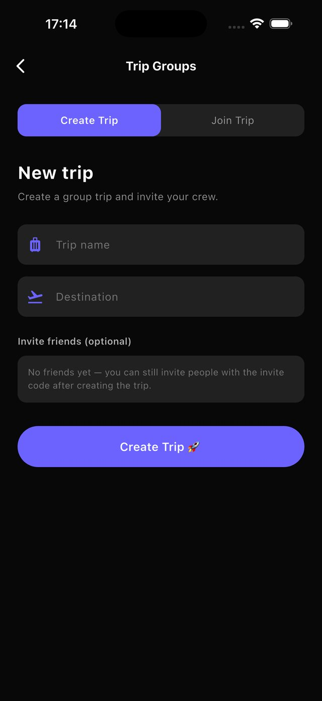
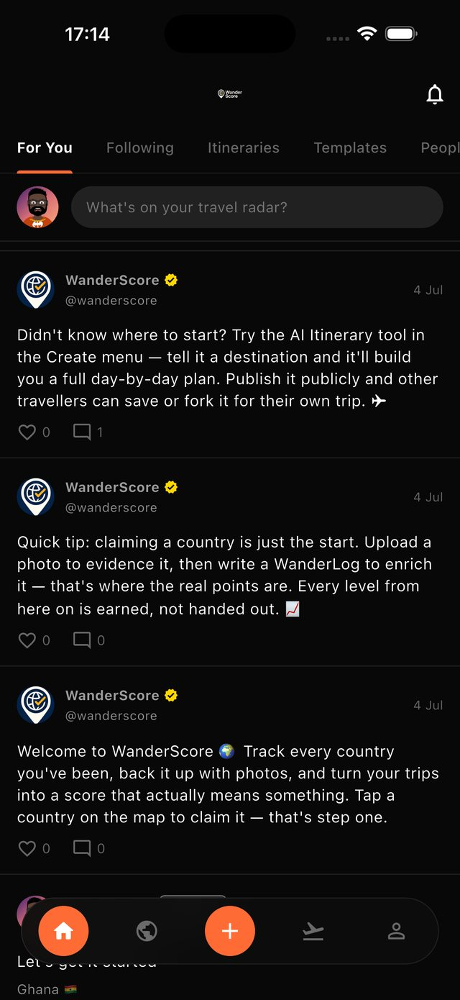
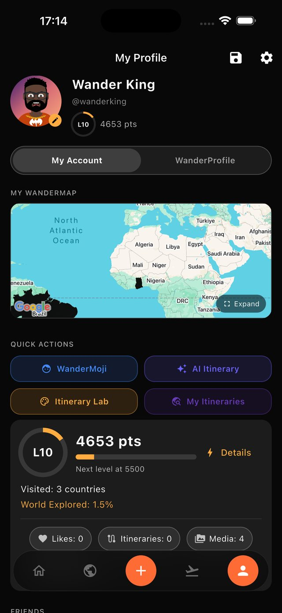
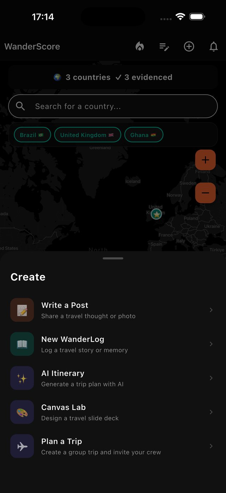

WanderScore turns "I've been everywhere" into a real, provable travel record — then helps you plan the next one with AI and share it with people who get it.

Most travel apps do one thing. WanderScore connects the whole loop — experience, creativity, planning, community, and income — so every part feeds every other part.
Tap a country on the map to claim it — that's step one. Real credibility comes next: back your claim with photo or video evidence, then write a WanderLog to enrich it. WanderLog is a genuine travel journal, not a photo dump — shareable privately, with friends, or with the world.

Enter a destination and a trip length, and the AI Itinerary Generator (powered by Claude) lays out a full day-by-day plan. Want full creative control instead? Build it manually in the Itinerary Lab, or design a shareable slide deck in Canvas Mode. Planning with friends? Start a Trip Group with an invite code for a shared live itinerary, group chat, and RSVP tracking.



Published itineraries and templates surface on a community Explore feed. Creators can sell templates via Apple IAP, or offer one free to new followers to drive growth. Your public profile — WanderLogs, published itineraries, visited countries, WanderScore, and custom WanderMoji avatar — becomes a real travel portfolio.

Level, WanderScore, visited countries, and the people you travel with — all on one page. As you log more, this becomes real proof of where you've been and what you've built, not just a bio.

Every core action in WanderScore lives behind a single Create button — log a moment, plan solo or with AI, design a shareable deck, or start a group trip. No hunting through menus to find the right screen.

Tapping every country on the map with no proof earns zero points and leaves the map visibly faded — there's no incentive to game it. WanderScore is built on two tracks that both feed the same total: one for how much you've physically travelled, one for how much you document and help others. A frequent traveller who never writes anything can score lower than someone who's been fewer places but shares rich, detailed WanderLogs.
You've tapped the country. It's on your map — the start of the record, not the proof.
You've uploaded a real photo or video tied to that country. Now it's backed by something.
Evidenced, plus a written WanderLog about it. This is where the real story lives.
WanderScore is built and supported directly by the team behind it — Black Manga Group Ltd. Reach out any time.
For bugs, account issues, billing questions, or anything else — this inbox is checked by the people who actually build the app.
wanderscoreltd@gmail.com ↗Open My Account → Settings inside the app for a direct delete option, or email us and we'll handle it for you.
Try Restore Purchases from the Template Marketplace first. If it still doesn't appear, email us your purchase receipt and we'll sort it directly.
Evidence photos can carry precise location data used to verify a claim. See the Privacy Policy below for exactly what's collected and why.